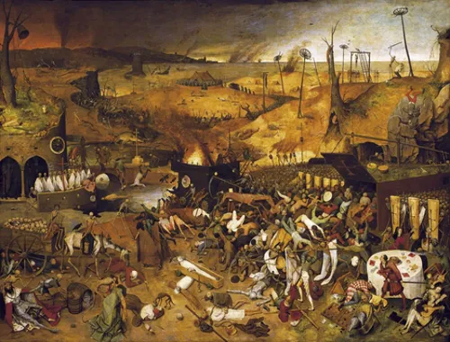
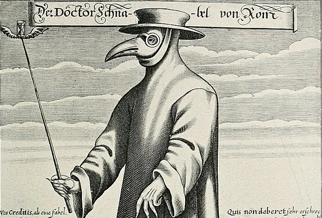

A peste negra ou peste bubônica foi uma doença que assolou a Europa durante o século XIV matando cerca de um terço da população europeia da época. A peste negra é causada pela bactéria Yersinia pestis.
O que foi a Peste Negra?
Origem da Peste Negra
Segundo historiadores a peste negra foi uma doença de origem asiática, acredita-se que ela teve sua origem na China. Sua difusão na Europa está relacionada às caravanas comerciais que vinham da Ásia e se dirigiam através do Mar Mediterrâneo para cidades portuárias, como Veneza e Gênova.
Propagação
A peste bubônica era transmitida por meio de ratos e pulgas, que estvam contaminados pela bactéria Yersinia pestis. A peste negra se propagava com facilidade, pois naquele período as condições de higiene eram praticamente nulas, e devido à isso quando os ratos e pulgas entravam em contato com os homens e eles fossem contaminados, eles poderiam a partir daí transmitir a doença para outros humanos por via aérea.
Sintomas
Dentre os sintomas da peste negra podemos citar:
- Dores no corpo
- Febre alta
- Tosse
- Inchaço nos gânglios e aparecimento de bulbos
A peste negra ficou conhecida como peste bubônica, pois ela provocava o aparecimento de bulbos na pele.
Fim da Peste Negra
A peste negra teve seu fim, devido às medidas de higiene e segurança que foram adotadas, como o confinamento, a construção de hospitais fora dos muros da cidade e a incineração dos mortos.
Vale ressaltar que a peste negra exite até os dias atuais e ela ocorre em locais onde as condições são muito precárias.
Consequências
Com o aparecimento da peste negra a Europa passou por grandes mudanças como a morte de um terço da população europeia da época que gerou aumento de trabalho nos feudos e fez com que os servos se revoltassem contra seus senhores, sendo isto uma das causas da crise do feudalismo e do renascimento urbano.
Também se fortaleceu a venda de indulgências feita pela Igreja Católica, pois as pessoas sabendo da calamidade que os assolava, queriam se livrar de seus pecados para ter uma boa morte.